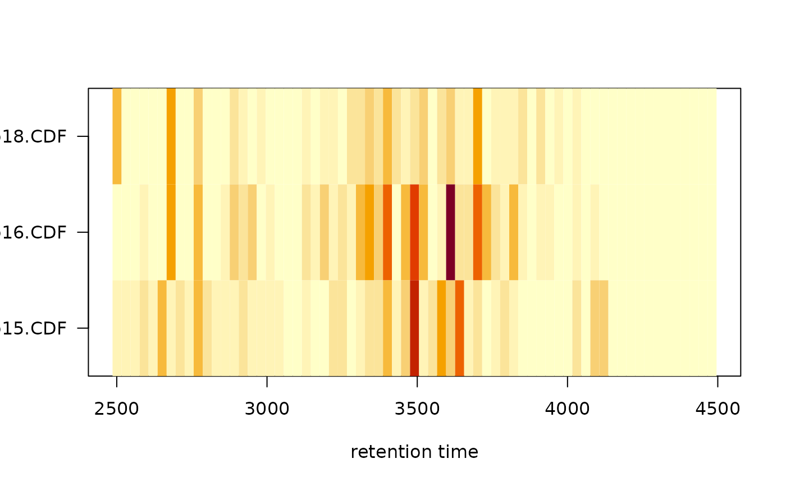

plotChromPeaks plots the identified chromatographic
peaks from one file into the plane spanned by the retention time and mz
dimension (x-axis representing the retention time and y-axis mz).
Each chromatographic peak is plotted as a rectangle representing its
width in rt and mz dimension.
This plot is supposed to provide some initial overview of the chromatographic peak detection results.
plotChromPeakImage plots the number of detected peaks for
each sample along the retention time axis as an image plot, i.e.
with the number of peaks detected in each bin along the retention time
represented with the color of the respective cell.
plotChromPeaks(
x,
file = 1,
xlim = NULL,
ylim = NULL,
add = FALSE,
border = "#00000060",
col = NA,
xlab = "retention time",
ylab = "mz",
main = NULL,
...
)
plotChromPeakImage(
x,
binSize = 30,
xlim = NULL,
log = FALSE,
xlab = "retention time",
yaxt = par("yaxt"),
main = "Chromatographic peak counts",
...
)XCMSnExp object.
For plotChromPeaks: numeric(1) specifying the
index of the file within x for which the plot should be created.
Defaults to 1.
numeric(2) specifying the x-axis limits (retention time
dimension). Defaults to NULL in which case the full retention
time range of the file is used.
For plotChromPeaks: numeric(2) specifying the
y-axis limits (mz dimension). Defaults to NULL in which case the
full mz range of the file is used.
For plotChromPeaks: logical(1) whether the plot
should be added or created as a new plot.
For plotChromPeaks: the color for the rectangles'
border.
For plotChromPeaks: the color to be used to fill the
rectangles.
character(1) defining the x-axis label.
For plotChromPeaks: character(1) defining the
y-axis label.
character(1) defining the plot title. By default (i.e.
main = NULL the name of the file will be used as title.
Additional arguments passed to the plot (for
plotChromPeaks) and image (for
plotChromPeakImage) functions. Ignored if add = TRUE.
For plotChromPeakImage: numeric(1) defining the
size of the bins along the x-axis (retention time). Defaults to
binSize = 30, peaks within each 30 seconds will thus counted and
plotted.
For plotChromPeakImage: logical(1) whether the peak
counts should be log2 transformed before plotting.
For plotChromPeakImage: character(1) defining
whether y-axis labels should be added. To disable the y-axis use
yaxt = "n". For any other value of yaxt the axis will be
drawn. See par help page for more details.
The width and line type of the rectangles indicating the detected
chromatographic peaks for the plotChromPeaks function can be
specified using the par function, i.e. with par(lwd = 3)
and par(lty = 2), respectively.
highlightChromPeaks for the function to highlight
detected chromatographic peaks in extracted ion chromatogram plots.
## Load a test data set with detected peaks
data(faahko_sub)
## Update the path to the files for the local system
dirname(faahko_sub) <- system.file("cdf/KO", package = "faahKO")
## plotChromPeakImage: plot an image for the identified peaks per file
plotChromPeakImage(faahko_sub)

## Show all detected chromatographic peaks from the first file
plotChromPeaks(faahko_sub)
## Plot all detected peaks from the second file and restrict the plot to a
## mz-rt slice
plotChromPeaks(faahko_sub, file = 2, xlim = c(3500, 3600), ylim = c(400, 600))